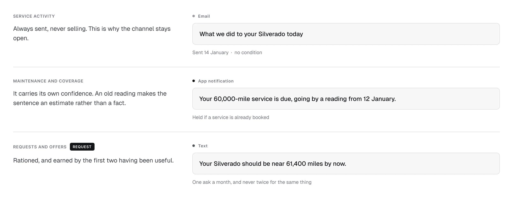
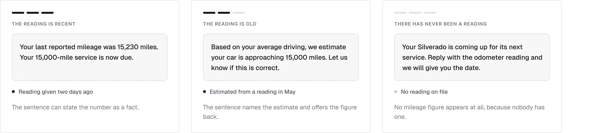
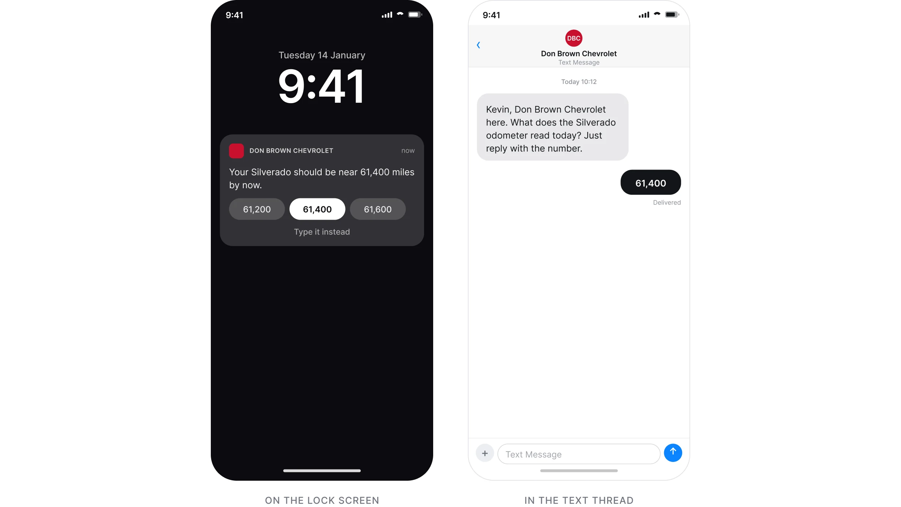
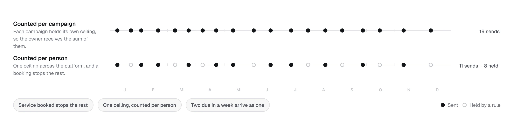
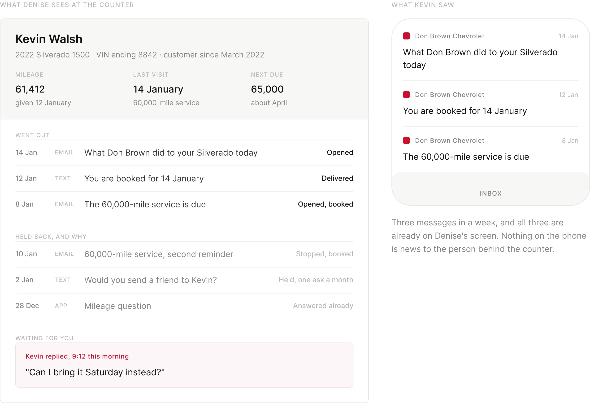
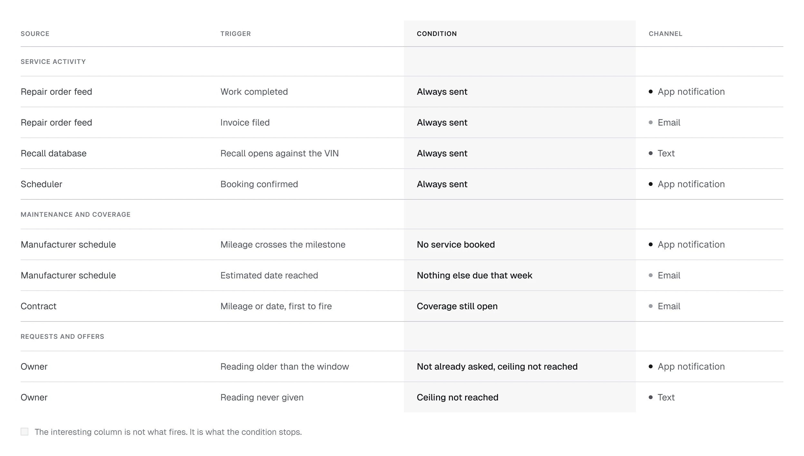
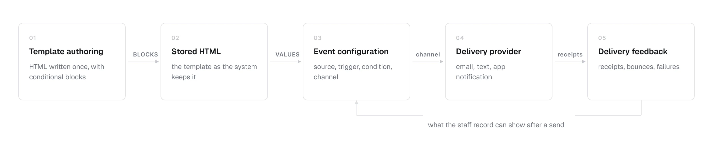
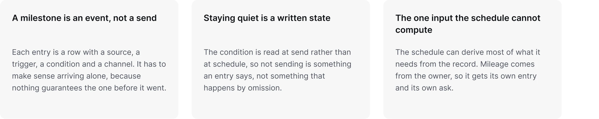
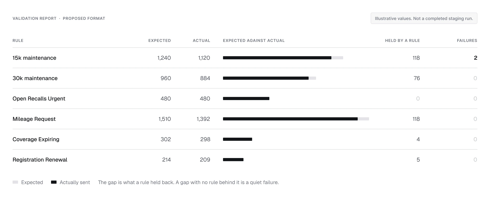

Vinsyt / Communications
The Lifecycle Engine
Vehicle reminders designed around what is known, what is estimated, and when not to send.
Role
Timeline and event modeling, routing, UX writing, mileage capture, and staff-facing design.
One owner timeline
Organize around the car, not separate campaigns
A completed service, an approaching milestone, an open recall, and a request for mileage all relate to the same vehicle. Designing them separately can obscure how they add up for the owner.
I organized the messages as entries on one timeline. The distinction is between an update about what happened, a reminder about what is due, and a request for the owner to do something.
The three kinds of entry
There are three kinds of entry and only three, and each one carries a different promise.

Confidence in the copy
Make confidence part of the copy
A reminder based on an old mileage reading should not sound like a current observation. The three examples show how the wording changes with the information available.
When a reading is old, the message identifies the estimate and gives the owner a way to correct it. When there is no reading, the copy does not introduce a mileage figure as though one were known.
The same reminder, three readings
The message changes with the evidence behind the mileage, not just the date on the calendar.

The missing input
Make the missing number easy to provide
The mileage-capture examples explore the same task in three places: suggested readings in an app notification, a numeric SMS reply, and an in-app camera route.
I kept the request focused on the reading. It does not need to become a booking pitch or a promotion at the same time.
One request, three places
Each channel asks the same question and gives a different way to answer it in one tap.

When not to send
Design the conditions that stop a message
I specified send-time checks so a recent booking can stop a message scheduled earlier. I also defined frequency limits across the owner relationship and a way to combine work due in the same week.
The comparison makes the consequence visible: the owner receives the sum of the platform’s messages, not a separate experience for each campaign or vehicle.
A year with and without shared limits
Frequency limits, combined reminders, and cancellation checks belong to the shared timeline.

Both sides of the send
Give the advisor the same history
The staff/customer pairing shows the two sides of a send. The advisor needs to know what the customer received, and the record needs to distinguish a held message from a failed one.
I specified that the staff entry be written before the send and that held messages carry a reason. This makes a deliberate decision not to contact someone visible to the people using the system.
The staff record and the customer inbox
The staff view records the message and explains why another was held back.

The event specification
Write the event table as the specification
Each event needs a source, a trigger, a condition, and a channel. The source determines what can be claimed; the trigger determines when it becomes relevant; the condition decides whether it is still needed; the channel carries the message.
I used the same event table to define the design and support engineering and QA. Feed limitations can then change the promise in the message, rather than being hidden behind it.
Source, trigger, condition, channel
One event model connects the design decision to implementation and to testing. 95 events are live in production today.

The delivery path
Account for the delivery path
The architecture connects template authoring, stored HTML, event configuration, delivery providers, and delivery feedback. Those are design constraints because the copy contains conditional blocks and values filled at send time.
My design work had to account for that path: which values a template receives, which blocks it renders, and what the staff record can show after a send.
The delivery path
The shared path from template authoring through to delivery feedback.

Three rules the stack forced
What the stack forced on how an entry is written.

Making rules inspectable
Make the rules inspectable
The example report compares expected sends with actual sends by named rule. It shows how the system could be checked for quiet failures, including messages that should have been held.
This is the proposed validation format, shown with illustrative values rather than a completed staging run.
Expected against actual
An example validation report, with illustrative values rather than a completed staging run.

Scope and evidence
Production messaging. An illustrative validation format
The case study shows the messaging model and its interface designs. The validation report is an example format, not a completed staging result.
- 17,067 reminders sent between January and September 2026
- Email, text, and app notifications. Email opened between 36 and 67 percent of the time, depending on the entry. 385 initial mileage prompts went out by email in the first eight months of 2026, and 52 percent were opened.
- One condition, evaluated at send
- A staff record of what went out and what was held